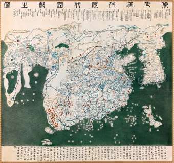
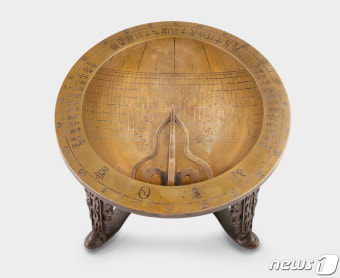
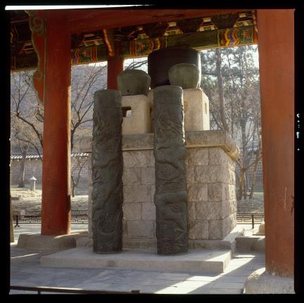
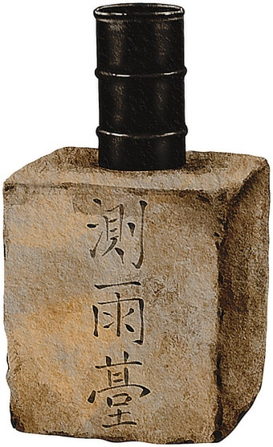
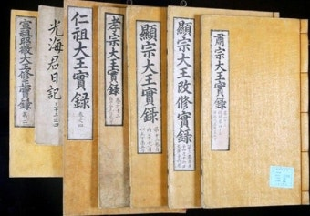
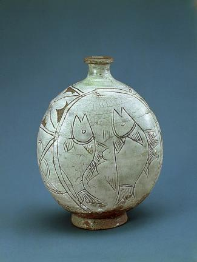
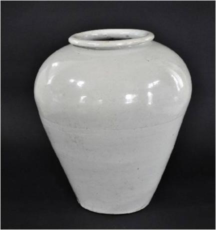

세종 때 과학 기구가 집중적으로 만들어졌고, 이황·이이는 성리학 이해의 두 갈래를 대표합니다
| 구분 | 이황 | 이이 |
|---|---|---|
| 이론 | 주리론 | 주기론 |
| 저서 | 성학십도 | 성학집요 |
| 정치관 | 왕의 자기 수양 | 신하의 역할 |
| 기타 | 일본 성리학에 영향 | 수미법(대동법의 선구) |
사진을 이 페이지와 같은 폴더의 images/ 폴더에 아래 파일명 그대로 넣으시면 자동으로 채워집니다. 국가유산포털이나 e뮤지엄에서 이름으로 검색하시면 공공누리(KOGL) 라이선스 사진을 받으실 수 있습니다.






